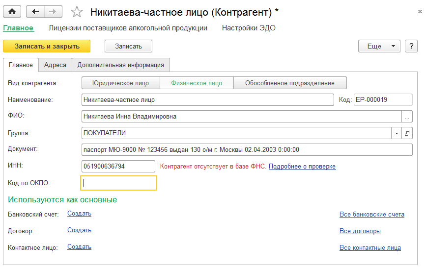
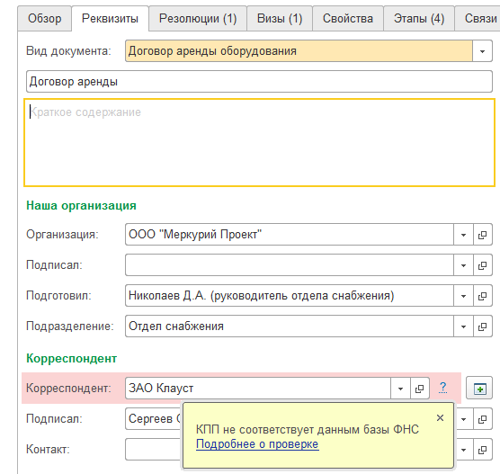

О сервисе проверки контрагентов ФНС
В программе реализована проверка контрагентов через Интернет посредством специализированного веб-сервиса ФНС.
Сервис "Проверка реквизитов контрагентов" ФНС позволяет в онлайн-режиме проверять существование контрагента по его ключевым реквизитам - ИНН и КПП.
| Есть в базе ФНС | - | означает, что налогоплательщик зарегистрирован в ЕГРН и имеет статус действующего в интервале ± 6 дней от даты запроса |
| Не действует или изменен КПП | - | означает, что налогоплательщик зарегистрирован в ЕГРН, но не имеет статус действующего в интервале ± 6 дней от даты запроса. Такой ответ можно интерпретировать следующим образом: либо контрагент с указанной комбинацией ИНН и КПП прекратил деятельность, либо указанный КПП был изменен, то есть, ранее комбинация ИНН и КПП была действительной, но теперь она недействительна |
| КПП не соответствует данным базы ФНС | - | означает, что КПП налогоплательщика не соотвествует тому ИНН, который был указан в запросе. Такое сообщение означает, что такой комбинации ИНН и КПП в ЕГРН нет и никогда не было |
| Отсутствует в базе ФНС |
- | означает, что налогоплательщик с указанным ИНН не зарегистрирован в ЕГРН |
|
Неверный ИНН |
- | означает, что в проверяемых данных (ИНН, КПП или дате) найдены ошибки |

При отрицательном результате проверки в формах списка и выбора справочника ИНН и КПП контрагента окрашивается в красный цвет.
Если от ФНС получен ответ, что контрагент прекратил деятельность, то в форме списка контрагент будут выделен серым цветом.
Если контрагент уже был проверен ранее, то при открытии карточки повторная проверка не выполняется, а актуализация результата проверки выполняется регламентным заданием с периодичностью раз в неделю в фоновом режиме.
Во входящих, исходящих, внутренних документах при отрицательном результате проверки контрагент выделяется красным фоном.
Проверка производится при открытии документа, а так же при изменении контрагента.
